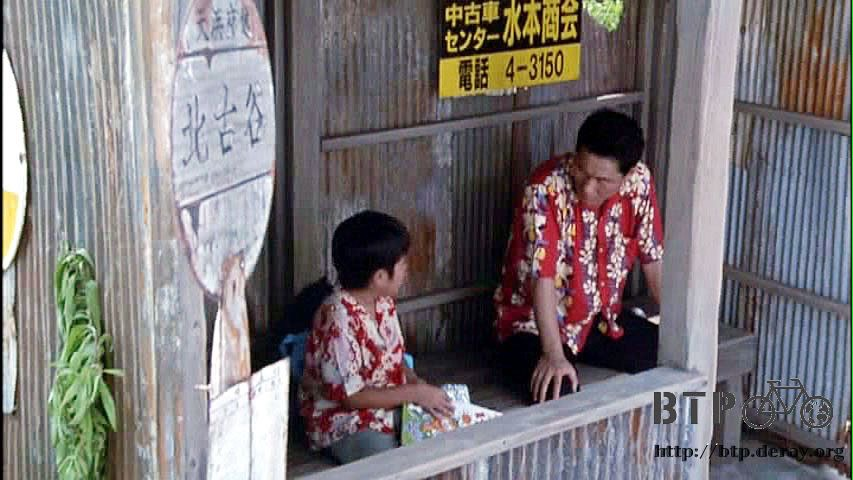
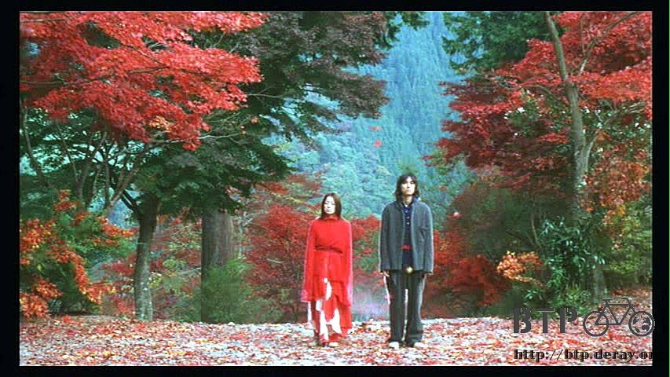

The weather was changeable, dry to wet, and wet to dry, and switched rapidly.
It was sunny at one moment, but poured the next minute.
I stayed in my hotel room, watching Takeshi Kitano movies the whole day. Good movies enriched my rest days.
Today, I watched ‘Kikujiro’s Summer’ about a boy living with his grandmother looked for his mother during summer vacation.
Less than one hour after setting out, he is extorted for money by bad kids.
It turns out that he is accompanied by an irresponsible man (who is worse than the bad kids) to look for his mom.
Many things happen along the way. The story is quite long and not simply about looking for mom.
The movie has Kitano’s unique style, super funny but very touching.

In addition, I watched ‘Dolls’ which is one of only a few movies directed by Takeshi Kitano without himself playing in the movie.
Three love stories are woven together in the movie.
The red rope fate story connects the entire movie, and the other two stories were just side stories.
Two lovers are tied together with a red rope. When the boy breaks up with the girl, she loses her mind.
The boy can not let go of her, and goes back to her by giving up his future.
The two of them go on a journey through four seasons.
A very affecting movie with soundtrack by Joe Hisaishi,
costume by Yohji Yamamoto and superb background scenery make it hard to believe that the movie is directed by Takeshi Kitano.
It is because that Takeshi Kitano is famous for his balletic brutality.
After many gangland fighting and killing movies, ‘Doll’ might change your impression of him.

‘BROTHER’ is his typical stylized violence movie about a yakuza head sets up a drug empire in USA.
Even though the movie is long, you won’t feel it because it is so splendid.
I had seen it a couple of times, however the plot and the performance attract me every single time.
‘Zatoichi’ is about the story of a blind swordsman in ancient Japan.
I thought Japanese costume dramas were all boring, but ‘Zatoichi” breaks my stereotype impression.
The goofy humor blow your mind.
Kitano has his best performance in this movie since Kitano is always in a playful mood in the rest of his movies,
but did this one seriously.
There are many others, such as ‘HANA-BI’ (aka ‘Fireworks’), ‘
Violent Cop’, ‘3-4 jugatsu’ (aka ‘Boiling Point’), ‘Kids Return’ and ‘Getting Any’.
After so many movies in one day, I noticed that same faces repeatedly appear in his movies.
If favorite actors/actresses die in one film, they will reappear in another film playing different roles, which is quite amusing.
In addition to watching movies, I ate in the gas station’s restaurant when I was hungry.
Even though I could not read the menu, I still understood numbers and was able to tell the difference between expensive and cheap.
The expensive hotel’s restaurant made me feel like screaming “help”.
The hotel room was not cheap, so I skimped on food walking 300 meters to dine at a gas station.
I was indulging in movies, so I only ate once today.
In addition watching movies casually, I studied a few Russian words since I would be crossing the border into Russia.
Russian was hard. I almost tied up my tongue but barely pronounced one phrase “Thank You”.
I would do the rest when getting into Russia.
The next movie on screen was ‘A Scene at the Sea’ still directed by Takeshi Kitano.
Hush! Keep Quiet